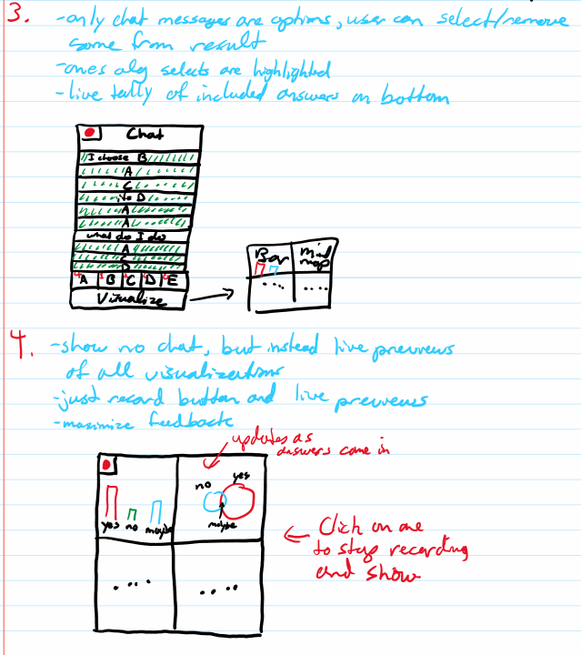
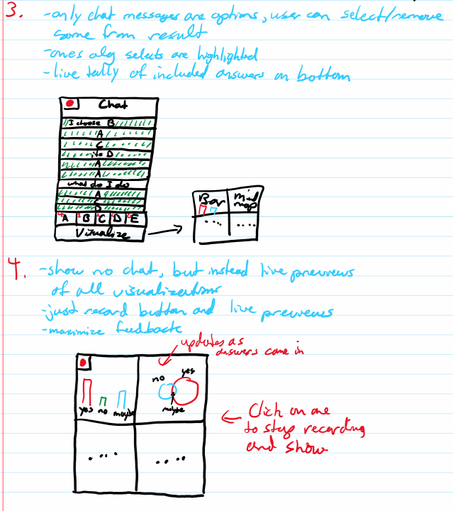

Low Fidelity Prototyping & Test Plan
Design Concepts
Sketches
 

More Detailed Sketches
After coming up with atleast 10 improvements to a few favourite sketches.


Prototypes


Usibility Goals & Benchmark Tasks
Usibility Goals
1. The system should seem familiar and therefore be quickly usable.
Users should demonstrate profeciency with the system almost immediately after playing with it for a few moments. Buttons and labels should suggest the appropriate path for actions the user wants complete.
2. The system should be highly customizable.
The visualizations, the applications layout, and the chat should all be easily changed at the users request.
3. The system should not obstruct the users view of zoom and in turn not be too annoying.
The system should be a helping hand to presenters and a tag along to Zoom therefore it cannot take away from the software it aims to help.
4. The system should offer the user a high level of optionality, by default, that is easy to find (without them having to manually make it so).
Multiple options should be offered to a user who doesn't want to manually customize anything. Many preset viewtypes and visualization options.
5. The system should offer feedback as data comes in.
Users shouldn't need to guess what the output will look like they should have an idea of what it will look like before they select there visualization.
Benchmark Tasks
You will find all the below benchmarks tasks test usibility goal 1 (specifically). The ability to perform all these tasks without training could prove how quickly learnable our system is.
1. The user asks a simple yes or no question
This refers to goal 1 (especially), a yes or no question is the basic option of our software and users should be able to do this quickly with almost no experiance.
2. The user can look at what his data looks like in multiple formats before choosing a visualization.
This is there to test usibility goal 5 we want no guess work from the user they should know what their visualization will look like with the data coming in before it is selected.
3. The user can manually customize and/or fix charts
Relating to goal 2 the user should be able to customize the software output to their wishes.
4. The user can select/find the alternative chart types to view data.
Relating to usibility goal 4 the user should be able to find multiple preset chart types to visualize data.
5. The user can find/interact with/follow zoom chat within our application.
Following from usibility goal 3. We don't want our aplication to take away from zoom therefore we included a chat function. This should serve just as well as the zoom chat.